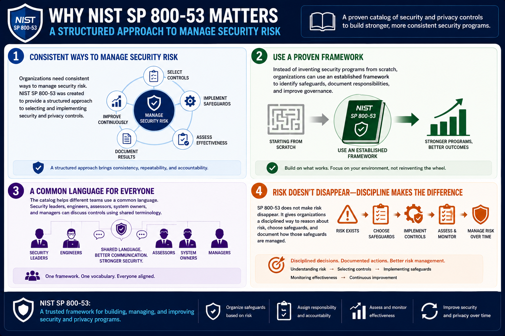

What Is NIST SP 800-53?
Why Was It Created?
Connecting to LMS... Progress: in progress
Version 1.0 | Date: 2026-06-16 | Introductory overview of NIST SP 800-53 security and privacy controls.

Narration
Organizations need consistent ways to manage security risk. NIST SP 800-53 was created to provide a structured approach to selecting and implementing security and privacy controls.
Instead of inventing security programs from scratch, organizations can use an established framework to identify safeguards, document responsibilities, and improve governance.
The catalog helps different teams use a common language. Security leaders, engineers, assessors, system owners, and managers can discuss controls using shared terminology.
SP 800-53 does not make risk disappear. It gives organizations a disciplined way to reason about risk, choose safeguards, and document how those safeguards are managed.